Частичное затмение солнца 2005-10-03
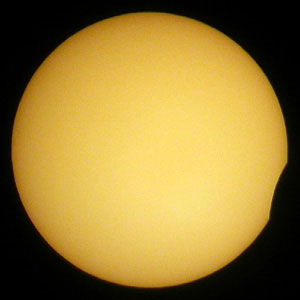
11:55
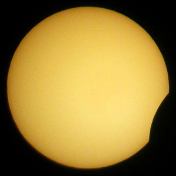
12:00
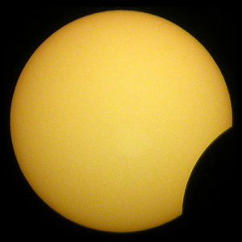
12:11
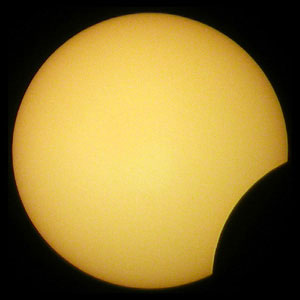
12:16
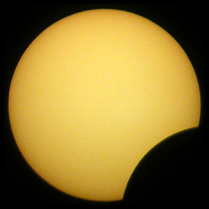
12:29
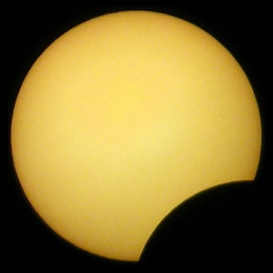
12:40
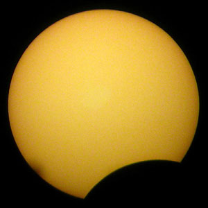
12:54
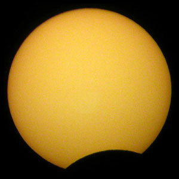
13:06
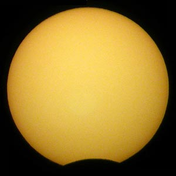
13:18
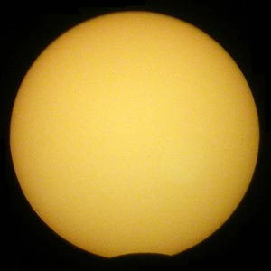
13:24
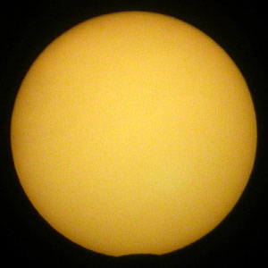
13:26
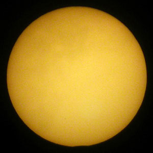
13:28
Использовалась цифровая камера и подзорная труба "Турист" с увеличением 10 и диаметром объектива 30мм.

Перед объективом подзорной трубы был установлен фильтр из одной дискеты, ослабляющий свет в 2000 раз. Выдержка 1/1000с, диафрагма 11. Баланс белого подобран, чтобы получить жёлтый цвет Солнца, хотя дискета даёт красный цвет. Место съёмки - Москва. Под снимками указано московское зимнее время.